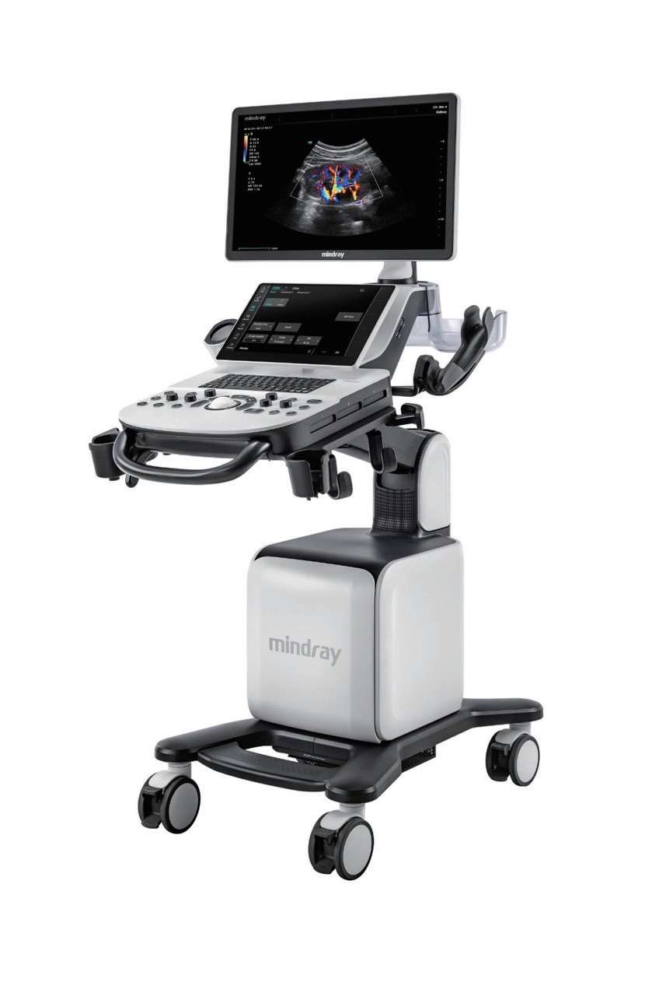

Systèmes d'Échographie
Système d'Échographie Mindray Consona N9
Système d'échographie diagnostic sur chariot premium conçu pour l'imagerie générale, l'obstétrique/gynécologie et les applications cardiovasculaires. Écran HD 21,5 pouces et interface tactile intuitive.
Écran LED Haute Résolution 21,5"
Console à Hauteur Réglable
Châsis Mobile Compact